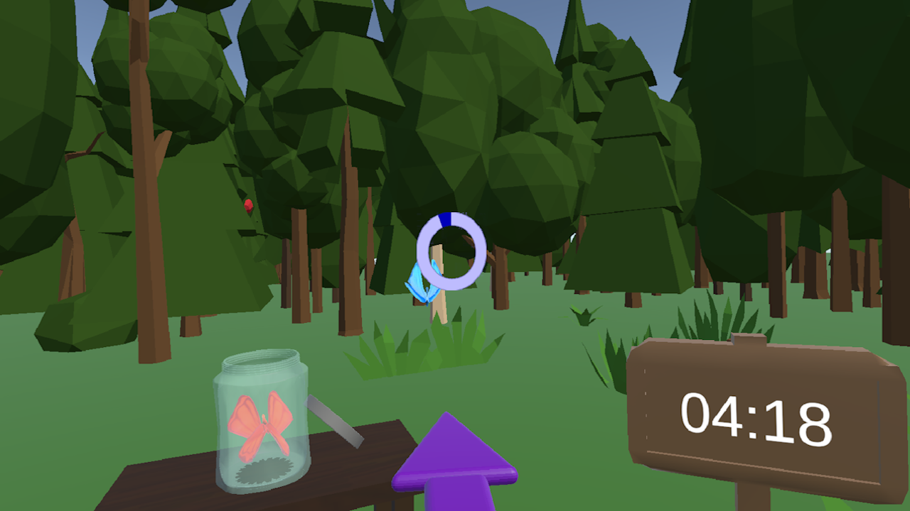
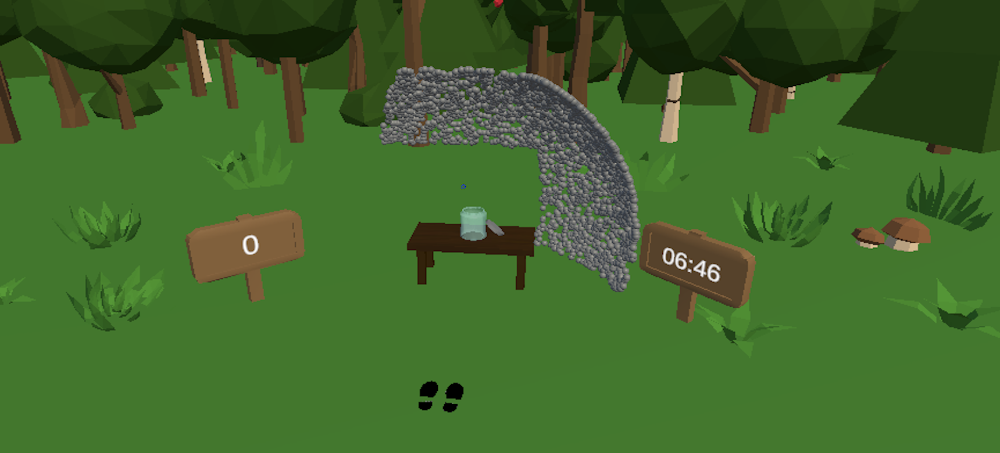

Butterfly
VR Game developed at H'ability for neck rehabilitation
I created the Butterfly game at H'ability, with the goal of helping in neck rehabilitation. A butterfly would appear around the player, and the player had to capture it by looking at it to place it in a jar.
The challenge of this game was the butterfly spawn zones. I wanted a real sense of randomness in their positions. However, the positions had to be modifiable by the healthcare professional during the session. So, I defined zones and applied positions where the butterflies could spawn using fairly complex mathematics.
This algorithm allows the butterflies to spawn not only in specific zones but also at more or less extreme angles, depending on what the healthcare professional wants the patient to work on.

Finally, since the patient captures a butterfly by looking at it, I had to create a reticle on the headset and find a way for it not to interfere with the virtual reality view (some elements placed in the center of the view tend to cause cross-eyed effects in VR).